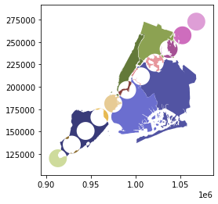

Examples Gallery¶
The following examples show off the functionality in GeoPandas. They highlight many of the things you can do with this package, and show off some best-practices.



The following examples show off the functionality in GeoPandas. They highlight many of the things you can do with this package, and show off some best-practices.